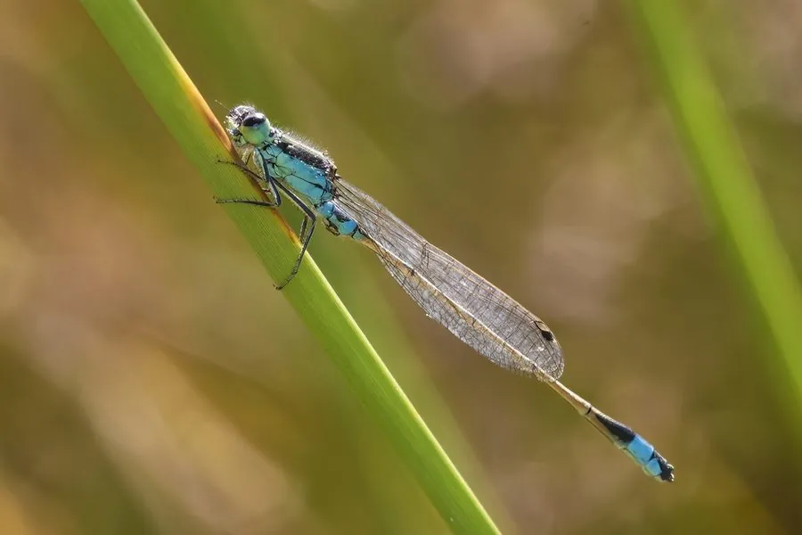

昆虫 · 动物界
蓝尾豆娘 Ischnura senegalensis

体型细小、停歇时双翅合拢的豆娘，雄虫腹部末端呈蓝色，常见于水边草丛，广泛分布于旧大陆热带和亚热带地区。
- 分类
- 门节肢动物门纲昆虫纲目蜻蜓目科蟌科属异痣蟌属
- 栖息环境
- 稻田、池塘、沟渠边的草丛与芦苇丛
- 地理分布
- 中国南方、日本、东南亚、非洲和澳大利亚
- 保护级别
- 暂无评估
物种志
蓝尾豆娘成虫体长约 3–3.5 cm，身体细长，比蜻蜓纤弱。雄虫胸部有蓝绿色和黑色条纹，腹部基部和末端呈蓝色，末端有蓝色的尾须；雌虫体色多变，有黄绿、橙红和蓝色等型。触角细小，复眼分列头部两侧。
成虫常在水边的草丛、芦苇和稻田边活动，飞行缓慢，停歇时双翅合拢在背上，与蜻蜓平展双翅不同。它们捕食蚜虫、蚊蝇等小型昆虫。幼虫生活在水草和泥沙间，捕食水生小动物。蓝尾豆娘一年发生多代，分布在中国南方、日本、东南亚、非洲和澳大利亚等旧大陆热带和亚热带地区。它是稻田和湿地中最常见的豆娘之一，雄虫腹末的蓝色斑块在水中和草叶间十分醒目。
形态与习性
- 食性成虫捕食蚜虫、蚊蝇等小型昆虫
- 体长约 3–3.5 cm
- 识别雄虫腹部末端呈蓝色，尾须蓝色
- 停歇停歇时双翅合拢在背上，与蜻蜓不同
- 生活史一年发生多代，幼虫水生
- 分布旧大陆热带和亚热带地区广布
趣味知识
- 豆娘停歇时把翅膀合拢在背上，这是与蜻蜓最直观的区别。
- 蓝尾豆娘雄虫的腹末有一块醒目的蓝色斑。
- 雌虫的体色有多种变化，有时会被误认为不同种类。